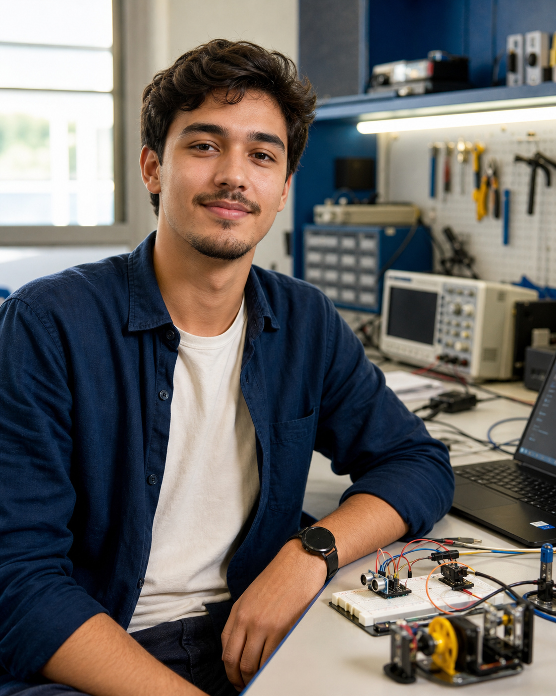

Whelth-Key
Softwere de busca e pesquisa de remédios, incando a farmácia mais proxima com o melhor preço.
HTML • NEXT.JS • SQL
Estudante de Engenharia • Inatel
Eu sou Lucas. Aprendo com desafios acadêmicos e profissionais, trabalhando para me aprimorar cada vez mais.

Sobre mim
Sou estudante do Inatel e gosto de transformar teoria em algo que funciona. Tenho interesse em software, eletrônica e dados, e busco oportunidades para aprender com problemas reais.
Projetos em prática
Use projetos de disciplinas, FETIN, laboratórios ou iniciativas pessoais.
Softwere de busca e pesquisa de remédios, incando a farmácia mais proxima com o melhor preço.
HTML • NEXT.JS • SQL
Plataforma de anotações e estudo, visando a organização, otimização e liberdade pessoal.
C# • WPF • MVVM
Um jogo tower defence com operações matemáticas, focado em aprendizado e diverção.
GameMaker • GitHub
Próximo passo
Aberto a estágio, pesquisa e projetos colaborativos.
lucasperrone01@email.com